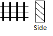
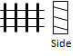

The design parameters for a grated inlet include:
Grate Type
One of the following types of grate designs:
P_BAR-50 |
Parallel bar grate with bar spacing 1-7/8-in on center |
|
P_BAR-50X100 |
Parallel bar grate with bar spacing 1-7/8-in on center and 3/8-in diameter lateral rods spaced at 4-in on center |
|
P_BAR-30 |
Parallel bar grate with 1-1/8-in on center bar spacing |
|
CURVED_VANE |
|
Curved vane grate with 3-1/4-in longitudinal bar and 4-1/4-in transverse bar spacing on center |
TILT_BAR-45 |
 |
45 degree tilt bar grate with 2-1/4-in longitudinal bar and 4-in transverse bar spacing on center |
TILT_BAR-30 |
 |
30 degree tilt bar grate with 3-1/4-in and 4-in on center longitudinal and lateral bar spacing respectively |
RETICULINE |
|
"Honeycomb" pattern of lateral bars and longitudinal bearing bars |
GENERIC |
|
A generic grate design. |

Length
The grate's length parallel to the street curb (feet or meters).
Width
The grate's width (feet or meters).
Open Fraction (for GENERIC grates only)
The fraction of the grate's area that is open. Values are predetermined for non-Generic grates.
Splash Velocity (for GENERIC grates only)
The minimum velocity that causes some water to shoot over the inlet thus reducing its capture efficiency (ft/sec or m/sec). Values are predetermined for non-Generic grates.